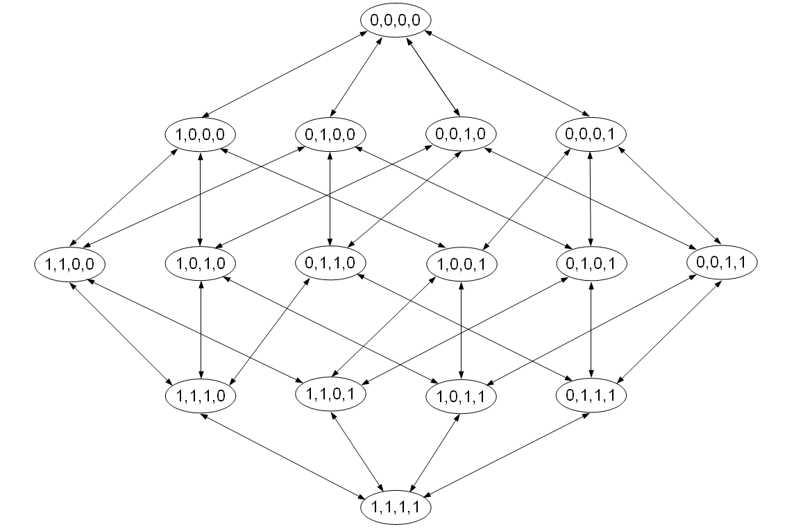

Variable Selection¶
Often data sets include a great many of variables and you want to reduce them. This technique of selecting a subset of relevant variables is called variable selection. Variable selection can make the model interpretable, the learning process faster and the fitted model more general by removing irrelevant variables. Different approaches exist to figure out which are the relevant variables:

Included strategies¶
The package comes with a couple of predefined strategies
Sequential Forward Search (sfs)¶
The best subset of variables is initialized as the empty set and at each step the variable that gives the highest correct classification rate together with the variables already included is added to the set. The “best subset” of variables is constructed based on the frequency with which each variable is selected in the number of repetitions given. See also <a target=”_top” href=”http://rss.acs.unt.edu/Rdoc/library/dprep/html/sfs.html“>sfs</a></term>.</p>
> library("mlr")
> ct <- makeClassifTask(data = iris, target = "Species")
> rin <- makeResampleDesc("cv", iters = 10)
> rin <- make.res.desc(rin, task = ct)
> varsel(learner = "classif.lda", task = ct, resampling = rin,
+ control = sequential.control(method = "sfs", alpha = 0.01))
For more details see also <a ref=”rdocs/sequential.control.html”>sequential.control</a>
Sequential Backward Search (sbs)¶
The sequential backward search (sbs) works analogously to sfs, but starts with the full variable set.
> ct <- makeClassifTask(data = iris, target = "Species")
> rin <- makeResampleDesc("cv", iters = 10)
> rin <- make.res.desc(rin, task = ct)
> varsel(learner = "classif.lda", task = ct, resampling = rin,
+ control = sequential.control(method = "sbs", beta = 0.01))
> varsel(learner = "classif.lda", task = ct, resampling = rin,
+ control = sequential.control(method = "sbs", beta = 0.01),
+ measures = list(mmce, time), aggr = c("max"))
Sequential Floating Forward Search (sffs)¶
In the case of sequential floating forward search (sffs), the algorithm starts with an empty variable set and in each step the best variable (w.r.t. some <a href=”rdocs/measures.html”> measure</a>) is included in the current variable set (= one step of the sequential forward search (sfs)). The algorithm also verifies the possibility of improvement of the measure-criterion if some variable is excluded. In this case, the worst variable is eliminated from the set (= one step of sequential backward search (sbs)). Therefore, the sequential floating forward search proceeds dynamically increasing and decreasing the number of variables until no more improvement is reached. </p>
> ct <- makeClassifTask(data = iris, target = "Species")
> rin <- makeResampleDesc("cv", iters = 10)
> rin <- make.res.desc(rin, task = ct)
> varsel(learner = "classif.lda", task = ct, resampling = rin,
+ control = sequential.control(method = "sffs", alpha = 0.01,
+ beta = 0.01))
Sequential Floating Backward Search (sfbs)¶
The sequential floating backward search (sfbs) works analogously to sffs, but starts with the full variable set.
> ct <- makeClassifTask(data = iris, target = "Species")
> rin <- makeResampleDesc("cv", iters = 10)
> rin <- make.res.desc(rin, task = ct)
> varsel(learner = "classif.lda", task = ct, resampling = rin,
+ control = sequential.control(method = "sfbs", alpha = 0.01,
+ beta = 0.01))
Monte-Carlo Search¶
In k-iterations variable subsets are generated randomly, i.e. every variable is chosen with probability 0.5. The best of the k subsets is selected.
> ct <- makeClassifTask(data = iris, target = "Species")
> rin <- makeResampleDesc("cv", iters = 10)
> rin <- make.res.desc(rin, task = ct)
> varsel(learner = "classif.lda", task = ct, resampling = rin,
+ control = randomvarsel.control(maxit = 50))